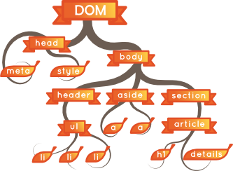
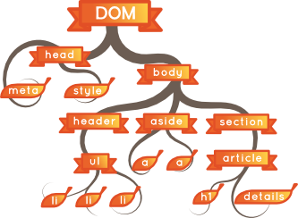

1995 : création du langage LiveScript. Inspiré du Java, interprété, pour ecrire des serveur Http. A la fin de l'année la version embarquée dans Netscape navigator est renommée JavaScript (partenariat Sun)
1996 : Internet Explorer 3 embarque une VM pour le JavaScript, et le popularise sur le Web
2000 : Plusieurs implémentations (et VMs): JScript (Microsoft), ActionScript (Adobe), JavaScript (Gecko et SpiderMonkey)
2005 : Jesse James Garret écrit un papier sur l'Ajax, et décrit ce qui deviendra les RIA. C'est le point de départ de Dojo, Prototype, JQuery, MooTools
2008 : V8 (Dannois) est embarqué dans Chrome (et Chromium). JS 1.7 : let, yield
2009 : Ryan Dahl crée NodeJS basé sur V8, bientôt embauché par Joyent, puis soutient de Microsoft pour la compatibilité Windows
2010 : JavaScript 1.8.5 (ES5)
2011 : Vert.X est un framework évènementiel sur la JVM inspiré de NodeJS, utilisable en JS, Java, Coffee, Python, Groovy, Clojure, Scala
2011 : LinkedIn (16 Juillet 2011) pour son appli mobile, Walmart (Janvier 2012) pour son appli mobile & son site, eBay (17 mai 2011), Paypal (30 mai 2013), Groupon (7 Octobre 2013) ont intégré dans leurs SI du NodeJS
2015 : EcmaScript 2015 (ES6) approuvé le 17 juin
Java (Groovy, Clojure, Scala), et .Net (C#, VB, Asp, F#) sont exécutés sur des machines virtuelles.
Les langages mordernes (Ruby, Go, Rust, Scala...) proposent une souplesse plus ou moins grande dans la gestion des types.
Il n'y a pas que le paradigme objet ! Les langages impératifs et fonctionnels ont des forces bien particulières.
Etude sur 30000 offres d'emploi au USA, Royaume Uni et Australie (juillet 2014).
Etude des salaires en ile de France
Evolution du salaire moyen pour NodeJS aux USA
Fullstack: une équipe capable de développer avec la même technologie les interfaces et les services métier
 - 
- 
Pas un langage : on fait bien du JavaScript (pas de nouveaux mot clés)
Pas un framework : pas de cadre de programmation imposé, pas de finalité spécifique
Un environnement d'exécution : à l'instar des navigateurs, NodeJS exécute du JavaScript, mais dans un Système d'exploitation
En guise d'échauffement : (re)découverte du langage JavaScript.
Une fois Node.js installé, pensez a configurer les variables d'environnement HTTP_PROXY et HTTPS_PROXY
La console de votre navigateur, ou le REPL node sont aussi utilisables, mais beaucoup moins pratique pour l'édition.
var isSimple = true;var hugeNumber = 5e14;var message = 'so far, so good';var reference = null; var dontDoThat;var peter = {name:'Peter', age:46};Les string peuvent être délimitées avec des quotes simples ou doubles. Choisissez un délimiteur et tenez vous-y.
var isSimple = new Boolean(true);true !== new Boolean(true); et d'optimisations rendues difficilesLes Object peuvent avoir autant de propriétés que vous voulez, à l'instar des dictionnaires (Python), hashs (Perl, Ruby), hash tables (C/C++), hash maps (Java), tableaux associatifs (Php)...
Ils sont très largement utilisés comme structures de données.
Les opérateurs de comparaison comparent bien les valeurs. == réalise un cast implicite des valeurs pointés, === n'en fait pas. C'est pourquoi il est recommandé de l'utiliser.
L'utilisation des constructeur (Number, Boolean, String) est déconseillée par rapport à l'utilisation des litéraux. La comparaison de deux instances ayant la même valeur sera toujours fausse : new Number(15) != new Number(15)

var fruits = ['apples', 'oranges', 'lemons'];var textFiles = /\.(rdf|txt)$/;var now = new Date(); // Date.now()var err = new Error('U know Y');var sayHi = function() { return 'Hi'; };Object, elles héritent des méthodes toString, valueOf, hashCode...Ils proposent tous différents méthodes et attributs
Les tableaux sont dynamiques : leur longeur évolue (et il peuvent avoir des 'trous'). La longueur est stockée dans length
Date et Error n'ont pas de forme litérale.
Il existe bien d'autres "classes" : Int8Array, WeakMap, RangeError, Proxy...
Et oui, les fonction sont des objets (Functions are first-class citizen) ! Elles ont des attributs (arguments, length...) et des méthodes (apply, bind...)
var sayHi = function() {...}function sayHi() {...}var sayHi = function sayHi() {...}var sayHi = new Function('')Les tableaux sont des objets, ils ont des méthodes comme slice().
Les object literals sont pratiques pour encapsuler des données dans une structure cohérente.
L'opérateur + permet de concaténer une chaînes de caractères avec une variable quelconque.
Les fonctions étant des objets, elles peuvent être passées en paramètres d'autres fonctions. Cela permet d'implémenter facilement le design pattern de délégation, ou pour "rappeler" le code appelant après une opération asynchrone.
var count = ['one', 'two', 'three'];
for (var i = 0; i < count.length ; i++) {
console.log(i, count[i]);
}var people = {name: 'mary', age: 42};
for (var attr in people) {
console.log(attr, people[attr]);
}['one', 'two', 'three'].forEach(function(elem) {
console.log(elem);
});while et do while existent mais sont peu utilisées.
Si le tableau n'est pas modifié, il est courant de stocker sa longeur dans une variable pour accélerer le traitement (pratique discutable, surtout utile pour de vieux moteurs incapables d'optimiser).
Le for in parcours toutes les propriétés (attributs et méthodes) du prototype, y compris celles héritées. Pour les différencier, il est classique d'utiliser hasOwnProperty()
L'utilisation du for in est à proscrire sur le tableaux : les méthodes et les attributs du tableau seront également procéssés !
Object.keys(obj).forEach(function(value, attr) {
/*...*/
});L'utilisation du forEach est de plus en plus populaire, notamment grâce à underscore et lodash, surtout qu'il est de plus en plus performants (mais toujours moins que le simple for).
A l'intérieur d'une boucle for, les instructions break et continue permettent de contrôller l'éxécution de la boucle
if (...) {...} else if (...) {...} else {...}switch (foo()) {
case 'orange':
case 'apple':
console.log('fruit');
break;
default:
console.log('unknown');
}var passed = foo() ? 'ok' : 'nop';Comme beaucoup de langage inspirés du C, Javascript utiliser le short-circuit evaluation pour les conditions
Attention à ne pas oublier le break au niveau d'un switch
Le switch utilise une égalité stricte, attention lors de switches sur des types non int, bool, string
L'opérateur ternaire est utilisable dans une expression, ce qui le différentie du if else qui est une instruction.
var minus = function(a, b) {
return arguments.length === 1 ? -a : a-b;
};
console.log(minus(10), minus(10, 3), minus.length); //-10, 7, 2(function(){})() === undefinedvar tmp = 10;
var permute = function(values) {
var tmp = values[1];
values[1] = values[0];
values[0] = tmp;
return values;
};
console.log(permute([4, 6]), tmp); // [6, 4], 10En Javascript, les fonctions n'ont qu'un prototype, il y a une différence entre les paramètres déclarés et les paramètres effectifs à l'éxécution.
arguments est un pseudo-tableau contenant les paramètes effectifs au moment de l'appel.
Attention dans les fonctions critiques à la désoptimisation liée à arguments
Pas de portée bloc en JavaScript, une portée fonction.
Dans une fonction, toutes les variables sont initialisées avant la première instruction (hoisting)
var makeStock = function() {
var stock = 0;
// Renvoi une closure : une fonction qui accède à une variable hors de son scope
return function(units) {return stock += units;};
}
var stock = makeStock();
console.log(stock(4), stock(2)); // 4, 6var callLater = function(done) {
setTimeout(done, 1); // invoke la fonction done dans 1ms
};
for (var i = 0; i < 3; i++) {
callLater(function() {console.log(i);}); // résultat ?
}Dans une fonction, les variable des scopes englobant sont toujours accessibles, sauf si une variable à l'intérieur de la fonction porte le même nom (shadowing)
L'exemple asynchrone aura pour résultat 3, 3, 3 et non pas 0, 1, 2 comme on aurait pû l'espérer
[0,1,2].forEach(function(i) {
callLater(function() {
console.log(i);
});
});for(var i = 0; i < 3; i++) {
(function(j) {
callLater(function() {
console.log(j);
});
})(i); // IIEF: Immediately-Invoked Function Expression
}Il faut utiliser arguments pour connaitre les véritables paramètres à l'appel de la fonction.
arguments n'est pas un vrai tableau : il n'a pas de fonction reduce, et il faut le "caster".
La fonction reduce prends 2 paramètres : une fonction de traitement, appliquée sur chaque élément du tableau, et dont le retour est stocké dans un accumulateur. Elle prend 2 paramètres : la valeur de l'accumulateur précédent, et l'élément courant. Le second paramètre de reduce est l'accumulateur initial.
getAttr() peut être réalisée récursivement ou itérativement.

this + prototype + new
var Person = function(name) {
this.name = name;
}
Person.prototype.say = function(something) {
console.log(this.name + ' said: ' + something);
}
var dookie = new Person('dookie');
dookie.say('hi'); // dookie said: hi
new Person('joe').say('hi'); // joe said: hiDans la fonction Person, utilisée comme un constructeur, on stocke dans l'objet courant (this) une propriété.
Le prototype de la fonction Person est enrichi avec une propriété say.
L'opérateur new a pour effet de créer un nouvel objet qui sera référencé par this.
Il n'y a pas de propriété say dans l'objet dookie. Mais comme il y en à une dans son prototype, elle est utilisée.
Lorsqu'on utilise les opérateurs . ou [], le pointeur this référencie l'objet à gauche de l'opérateur.
A l'intérieur du constructeur, il aurait été possible d'affecter say dans this, plutôt que de le mettre dans le prototype. Cela accélère de manière sensible l'exécution, mais augmente la taille des instances (puisque la méthode est dupliquée dans chaque instance).
Tout ce qui est dans le prototype est donc partagé entre toutes les instances, mais ne peut servir à faire des variables à échelle de classe.
Attention : le mot clé this n'est jamais facultatif, comme en Java, C#.
var Student = function(name, grade) {
// Appel du constructeur de la classe mère
Person.call(this, name);
this.grade = grade;
}
// Le prototype de Student étends celui de Person
Student.prototype = Object.create(Person.prototype);
Student.prototype.constructor = Student;
// on peut maintenant ajouter/surcharger des méthodes
Student.prototype.toString = function() {
return this.name + '(' + this.grade + ')';
}
var jake = new Student('jake', 'B-');
jake.say('hoy'); // jake said: hoy
console.log(jake.toString()); // jake (B-)L'ordre des instructions sur le prototype est crucial !
Il faut repositionner à la main la fonction constructeur car elle à été écrasée par l'affectation juste au dessus.
Object.create() est apparu en JS 1.8.5. Auparavant, il fallait utiliser un polyfill
Polymorphe par nature: la méthode de la sous classe sera toujours appelée en priorité sur la méthode de la classe mère.
Héritage minimaliste : pas d'interfaces, pas d'héritage multiple. Mais la création de traits est très simple par extension du prototype.
Pas d'encapsulation avec des notions de visibilité (private, protected...), mais faisable à base de closures.
Un article détaillé sur le sujet
counter = 0;var a = 1; // global, car pas dans une fonction
var f1 = function(cond) {
var b = 2; // local à f1
if (cond) {
var c = 3; // local à f1 !
var f2 = function() {
var d = 4; // local à f2
}
}
console.log(c); // 3, car c est local à f1
console.log(d); // ReferenceError: d is not defined
};Les linters vous aiderons à ne jamais oublier le mot-clé var
La ReferenceError signale une variable utilisé dans un scope où elle n'est pas définie.
Pour éviter le hosting, le mieux est d'être en ES6. Sinon, on peut se forcer à déclarer les variable en début de fonction (les linters peuvent aider).
(function() {
a++;
console.log(a); // NaN
var a = 10;
console.log(a); // 10
f(); // yeah !
function f() {console.log('yeah');}
})()Person.prototype.callMeLater = function() {
setTimeout(function() {
console.log(this.name + ' calls you back !');
}, 10);
};Les règle de hoisting sont différente pour les variables et les définition de fonction. Pour obtenir un fonctionnement cohérent, on conseillera les assignation de fonctions
Le mot clé this pointe sur l'objet courant au moment de l'exécution, pas au moment de l'appel.
Lorsqu'une méthode est exécutée suite à un évènement asynchrone (timer, évènement navigateur, appel ajax, accès disque/réseau), l'objet courant n'est plus celui au moment de l'appel.
Il est courant d'utiliser une closure pour conserver le this (le célèbre
var self = this;var arr = [];
arr[99] = '!';
console.log(arr.length); // 100var arr = [1, 2, 3];
arr.trim = function() {};
for(var i in arr) {
console.log(i, arr[i]); // 1, 2, 3, trim
}var basket = [];
basket['apples'] = 2;length renvoi l'indice le plus grand (la taille occupée en mémoire donc), pas le nombre d'éléménts contenu.
Le for in ne garanti pas l'ordre de passage des clés, et parcours tous les élements enumérables du prototype.
La longueur du tableau ne tient pas compte des indices (des attributs) non numériques. Cette utilisation est destabilisante pour les lecteurs.
var a = 10, b = new Number(10);
a == b; // true : cast, ou type coercion
a === b; // false : identitéfalse == 0 == '' == NaN == null == undefined == Boolean('') === false; implicites en fin de lignevar dynamic = new Function('p1', 'return p1 + 10');
dynamic(5); // 15Les casts implicites sont pratiques, mais difficile à maîtriser, et il est préférable de s'en tenir aux égalités strictes pour une meilleur lisibilité.
TODO règles des ; implicites
constletconst movie = {
title: 'Alien'
};
movie = 'Terminator'; // Erreur : affectation impossible
movie.title = 'Fight Club'; // OK
{
let myMovie; // Scope block
}function movie (id, title = 'Alien', year = 1979) {
return `Movie ${id} : ${title} (${year})!`;
// Evite 'Movie ' + id + ' : ' + title + ' (' + year + ')' + '!'
}
movie(426); // Donne 'Movie 426 : Alien (1979)'movies.map(function(movie) {
return '${movie.id}' + ' : ' + '${movie.title}';
});
// Devient
movies.map(movie => `${movie.id} : ${movie.title}`);movies.map((movie, actor) => { // Un peu de traitement métier
return `${movie.id} : ${actor}`
};thisPerson.prototype.callMeLater = function() {
setTimeout(() => {
console.log(this.name + ' calls you back !');
}, 1);
};var PI = Math.PI;
exports.area = function (r) {
return PI*r*r;
};
exports.circumference = function (r) {
return 2*PI*r;
};module.exports = {area: /*...*/, circumference: /*...*/};RequireJS est un framework de dépendances entre fichier JS pour le navigateur (chargement dynamique), qui implémente la spécification Asynchronous Module Definition
CommonJS est une spécification pour utiliser le JS en dehors du navigateur, qui inclu une système de modularisation
EcmaScript 6 inclu un système de modularisation, dont on peut trouver diverses implémentations
NodeJS implémente uniquement la spec CommonJS.
En NodeJS il y a néanmoins un scope global, accessible depuis un module avec la variable global
var common = require('../utils/common'); // relatif
var request = require('request'); // core ou externe
var render = require('stylus/render.js'); // fichier particulier du module externe 'stylus'
const { area, circumference } = require('../utils/common'); // fonction spécifique du modulerequire()L'import relatif l'est par rapport au fichier (module) courant, et commence par ./ ou ../.
Le séparateur de chemin est toujours / quelque soit l'OS utilisé.
L'extension de fichier '.js', '.json' et '.node' sont facultatives: ../utils/common équivaut ../utils/common.js
L'import d'une fonction spécifique permet un allègement de l'import et ainsi un chargement plus rapide.
Un import commençant par / est un import absolu. C'est une syntaxe déconseillée.
Pas d'absolu pour éviter les problèmes de portabilité
Pas de relatif pour les dépendances externes, pour bien les repérer
Regrouper des dépendances externes pour NPM et pour la lisibilité
Ne pas dépendre de l'organisation interne d'une dépendance externe
les exports d'un module sont mis en cache (mémoire) par NodeJS, pour accélerer les futurs imports.
Il est possible d'avoir des dépendances cycliques, mais c'est compliquer a gérer.
tps/modules> node .tps/modules> node index.jsIci, on différentira stocks.js et actions.js, qui publient plusieurs propriétés, de command.js, qui ne publie qu'une unique fonction.
On n'utilisera ici que des require de type relatif.
La création du module actions peut être réalisée de 3 manières :
console.log(1);
require('fs').readFile('package.json', function(err, content) {
console.log(2);
});
console.log(3); // Qu'est ce qui est affiché sur la console ? pourquoi ?Contrairement à d'autre languages, Le JavaScript n'est pas interruptible
Il existe des version synchrone de certaines fonctionnalités sur les fichiers, mais jamais sur les sockets.
Un article sur l'event loop en NodeJS, et une conférence sur l'event loop dans le navigateur
C'est généralement l'I/O qui est le plus couteux dans un programme, c'est quasiment systématique dans un service web.
Tant qu'il y a des instructions a exécuter, l'event loop ne dépile pas les callback.
Lorsque le processing devient trop important, il est nécessaire de le déporter dans un autre thread : une autre instance VM (à l'instar d'un webworker) voire un exécutable d'un autre langage.
Une exception levée dans un callback ne peut être catché par un try autour de la fonction asynchrone
La gestion des erreurs devient alors explicite et locale au callback
readFile, writeFile, appendFile, watchFile, unlinkreaddir, mkdir, rmdirrename, exists, link, statchown, chmodopen, read, write, close...L'usage des fonctions en mode synchrone est a réserver à des cas très spécifiques, comme le chargement de configuration car il est alors normal que l'I/O soit bloquant au démarrage de l'application.
Les versions synchrones ne prennent pas de callback en paramètre, et leur retour est le résultat de l'opération, si une erreur a lieu il y a un throw d'Error.
join, normalizeresolve, relativebasename, dirname, extnamesep, delimitersep est le séparateur de fichier (/ sur Unix, \ sur Windows)
delimiter est le séparateur de chemins (: sur Unix, ; sur Windows)
null.Pour lire le contenu d'un dossier, utilisez l'API Node
fs.readdir()readdir() ne renvoi pas le chemin absolu des éléments : utilisez
path.resolve()path.join()La grande difficulté de getDirStat est dans l'utilisation d'une fonction asynchrone (
fs.stat()argvnode server.js 8080 : argv ~= ['node', 'server.js', '8080']stdin, stdout, stderrenv, versions, arch, platform, cwd(), memoryUsage()...process est une variable globale de type object accessible n'importe où depuis votre programme
stdin est un Readable stream, stdout et stderr des Writable streams
console.log(), console.dir()... ne font qu'écrire dans process.stdout
Certaines propriétés du process courant peuvent être modifiées à chaud : setgid(), setuid(), kill()...
process est une instance d'EventEmitter
Il ne faut rien réaliser d'asynchrone dans l'auditeur d'exit, car le programme se terminera à la fin de ce dernier
uncaughtException est le try-catch de plus haut niveau : il ne doit pas être utilisé pour récupérer des exceptions "normales"
Il est généralement reconnu qu'il faille stopper le programme lorsqu'on reçoit une uncaughtException, et ce mécanisme existe à titre informatif
type(), release()tmpdir(), hostname()cpus(), freemem(), totalmem(), loadavg()networkInterfaces()loadavg() est un concept Unix, indiqué sous la forme d'un nombre réel, qu'il est généralement bien de maintenir en dessous du nombre de processeurs logiques
loadavg() est toujours nul sous Windows
Une partie des API de NodeJS sont écrites en C/C++, l'autre repose sur celle-ci
log(), info(), warn(), error(), dir(), time() + timeEnd(), trace()setTimeout() + clearTimeout(), setInterval() + clearInterval(), setImmediate() + clearImmediate()
format(), inspect(), inherits()global, __filename et __dirnameconsole.X() sont des fonctions synchrones (à moins de configurer la sortie standard dans un pipe) : attention à leur impact sur l'exécution !
Comme nous le verrons plus tard, SetTimeout empile un callback dans la pile asynchrone
setTimeout(fn, 0) est particulièrement déconseillé, car il crée des timers système, là où process.nextTick() a une connaissance de l'event loop et s'y intègre à moindre coût
setInterval() est à manipuler avec précaution car il peut provoquer un phénomène d'engorgement
setImmediate() est déterministe et passe après l'I/O, les autres ne le sont pas
util.format() est une implémentation allégée de sprintf() qui supporte le JSON
util.inspect() est utilisé par console.dir()
util.inherits() permet de chainer les prototypes, et est utilisable en remplacement de Object.create() lors de la déclaration d'une classe fille
global est la variable globale qui permet d'écrire et lire dans un scope partagé entre tous les modules en cours d'éxécution
__filename est le nom de fichier ayant déclaré le code exécuté (chemin absolu)
__dirname est le nom du dossier dans lequel le script exécuté existe (chemin absolu)
// exécution de 'node example.js' dans /Users/a127380
console.log(__dirname); // /Users/a127380
console.log(__filename); // /Users/a127380/example.jsprocess.on('uncaughtException', function(err) { /*...*/})C'est l'argument de process.exit() qui spécifie le code de fin d'exécution du programme : très utile pour les tests lors de l'intégration continue !
Pour afficher le code de sortie de la dernière commande, tapez echo $? sous Unix, echo %errorlevel% sous Windows CMD et echo $LastExitCode sous Windows Powershell
Dans la fonction qui s'enregistre toute les secondes et déclenche une exception, n'oubliez pas qu'aucune instruction ne peut être exécutée après un throw !
Pour prouvez que vous catchez correctement les 3 exceptions, il peut être utile de différentier leur message d'erreur et de les afficher
L'explication de l'inscription d'un auditeur d'évènement sera détaillée dans la prochaine partie de la formation
os, process, console...